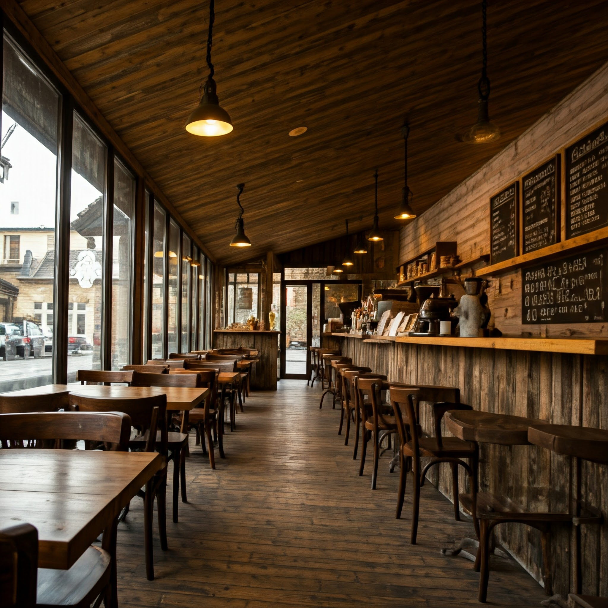
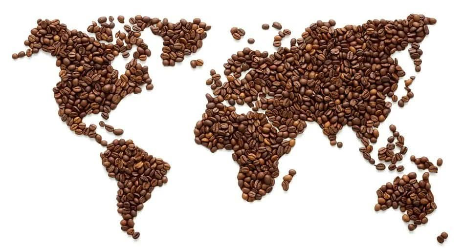

Tueste Medio
Home
Blog
Galería
Glosario
Contacto
Nuestro blog cafetero
Arte, cultura, historia y más
Qué esperar al adentrarse en el mundo del café

Buscando cafetería: El sitio perfecto para mí
¿Cómo lo hacen?
Métodos... Sabores

Café alrededor del mundo
El café y la salud